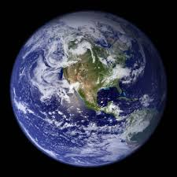

Nombre |
Información |
TIERRA |
La Tierra (del latín Terra,17 deidad romana equivalente a Gea, diosa griega de la feminidad y la fecundidad) es un planeta del sistema solar que gira alrededor de su estrella —el Sol— en la tercera órbita más interna. Es el más denso y el quinto mayor de los ocho planetas del sistema solar. También es el mayor de los cuatro terrestres o rocosos. La Tierra se formó hace aproximadamente 4550 millones de años y la vida surgió unos mil millones de años después.18 Es el hogar de millones de especies, incluyendo los seres humanos y actualmente el único cuerpo astronómico donde se conoce la existencia de vida.. |